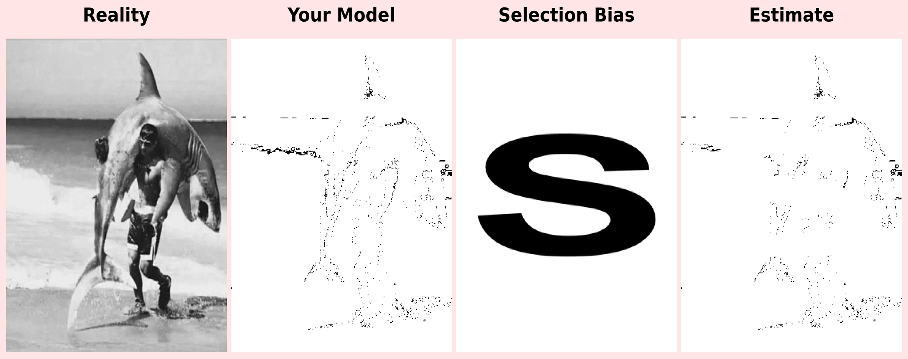

Selection Bias & Missing Data Challenge - Part 2
Creating a Statistics Meme: Visualizing Selection Bias
🎨 Selection Bias & Missing Data Challenge - Part 2
Introduction
Welcome to Part 2 of the Selection Bias & Missing Data Challenge. This project demonstrates how selection bias—one of the most critical problems in statistical analysis—can be visualized and understood through a creative, memorable four-panel meme. By transforming abstract statistical concepts into visual representations, we create a powerful tool for understanding how biased sampling can distort our understanding of reality.
The Problem: Visualizing Selection Bias
Selection bias occurs when the process of selecting observations for analysis systematically excludes certain groups, regions, or types of data, leading to a sample that doesn’t accurately represent the population of interest. This fundamental problem affects research across disciplines—from medical studies to social surveys, from historical analysis to market research.
The Visual Approach
To make this abstract concept tangible, we use a four-panel visualization where:
- Reality represents the true population—the complete, unbiased truth we’re trying to understand
- Your Model represents our sample—a simplified but systematic representation of reality
- Selection Bias represents the systematic pattern of missing data—visualized as a bold letter “S”
- Estimate represents the biased conclusion we’d draw from incomplete data—showing what happens when selection bias affects our analysis
The Core Concept: Images are simply matrices—2D arrays where each value represents a pixel (0.0 = black, 1.0 = white). Your stippled image is a matrix with black dots (data points) on a white background. Selection bias removes some of these pixels (data points) in a systematic pattern (the “S”), creating a biased estimate that doesn’t reflect the true population.
This visualization makes the invisible visible: you can literally see what’s missing, making it easier to recognize and address selection bias in real-world scenarios.
Why This Matters
This exercise represents a new paradigm in statistical education: collaborating with AI to transform abstract concepts into memorable visual artifacts. You’re not just coding—you’re engaging in a creative process that combines human understanding with computational power to produce work that would have previously required years of specialized training.
The Power of Visual Learning
The meme you create serves as a mental anchor—a visual memory that will persist throughout your career. Whenever you encounter data analysis in the future, this visualization will prompt you to ask the critical question: “Does my sample match my population of interest?”
Research in cognitive psychology shows that visual metaphors and memorable images significantly improve retention and understanding of complex concepts. By creating this visualization yourself, you’re building neural pathways that connect the abstract concept of selection bias with a concrete, visual representation. This connection makes it easier to:
- Recognize selection bias in real-world scenarios
- Explain the problem to others using the visual metaphor
- Address bias in your own research and analysis
- Remember the concept long after the assignment is complete
The AI Collaboration Model
This project demonstrates how modern AI tools can amplify human capability. Rather than spending weeks learning complex image processing algorithms, you’re able to focus on understanding the conceptual framework while AI handles the technical implementation. This represents a shift from traditional education models toward a more efficient, collaborative approach where:
- You provide: Conceptual understanding, critical thinking, and creative direction
- AI provides: Technical implementation, code generation, and computational power
- Together you create: Professional-quality work that demonstrates deep understanding
This is the future of statistical education: focusing on awareness and understanding while leveraging technology for execution.
The Statistics Meme: A Visual Demonstration
The centerpiece of this project is a four-panel statistics meme that visually demonstrates selection bias through a clear, memorable metaphor. Each panel tells part of the story, working together to create a comprehensive understanding of how selection bias distorts our view of reality.

Figure 1: The four-panel statistics meme visualizing selection bias. From left to right: Reality (true population), Your Model (systematic sample), Selection Bias (systematic missing data pattern), and Estimate (biased conclusion based on incomplete data).
This visualization was created using Python and image processing libraries, combining the original photograph with a stippled representation generated using blue noise stippling algorithms from Part 1 of this challenge. The code ensures precise alignment, proper masking, and professional presentation quality.
Understanding Selection Bias Through Visualization
This four-panel meme demonstrates the concept of selection bias in statistics through a visual metaphor that makes abstract statistical concepts tangible and memorable. By seeing the problem visually, we can better understand its implications and recognize it in real-world scenarios.
The Four Panels: A Detailed Breakdown
Panel 1: Reality — The True Population
This panel represents the true population—your original image showing the complete, unbiased truth. In statistical terms, this is the full population we want to understand: every detail is present, nothing is missing, and the representation is complete.
Statistical Interpretation: - This is the parameter we’re trying to estimate - It represents the ground truth against which all samples are compared - In research, this would be the ideal dataset that includes all relevant observations - Every pixel (data point) is accounted for, providing a complete picture
Why It Matters: Without understanding what the true population looks like, we can’t recognize when our sample is biased. This panel serves as the baseline—the standard against which we measure the accuracy of our estimates.
Panel 2: Your Model — The Systematic Sample
This panel shows your stippled representation—a model of reality created through systematic sampling using blue noise stippling algorithms. The black dots represent your data points or observations, carefully distributed to capture the essential structure and visual information of the original image.
Statistical Interpretation: - This represents your sample—a subset of the population - The stippling process mimics systematic sampling methods used in research - While simplified, it captures the essential structure of the population - In ideal circumstances, this sample would be representative and unbiased
The Sampling Process: The blue noise stippling algorithm ensures that dots are distributed according to importance (darker areas get more dots) while maintaining spatial uniformity. This mirrors how good sampling strategies work: they capture important variation while ensuring even coverage.
Why It Matters: This panel demonstrates that even a well-designed sample is still a simplification. The challenge is ensuring that this simplification doesn’t systematically exclude important information.
Panel 3: Selection Bias — The Systematic Missing Data Pattern
The bold letter “S” represents a systematic pattern of missing data—the core of selection bias. This is not random missing data, but a patterned absence that follows a specific structure. The “S” shape visually demonstrates how selection bias creates systematic gaps in our data.
Types of Selection Bias Represented: - Geographic Bias: Certain regions not sampled (like the “S” excludes those areas) - Demographic Bias: Certain groups excluded from the sample - Temporal Bias: Certain time periods missing from the data - Response Bias: Certain types of responses not collected - Volunteer Bias: Only certain types of participants included
Statistical Interpretation: - The “S” represents the selection mechanism that determines which observations are included - This mechanism is not random—it follows a pattern (hence the visible “S”) - The pattern creates systematic gaps that distort our understanding - These gaps are predictable and follow a structure, making them particularly dangerous
Why It Matters: Selection bias is insidious because it’s systematic. Unlike random error, which averages out, systematic bias compounds and leads to consistently wrong conclusions.
Panel 4: Estimate — The Biased Conclusion
This panel shows what you’d see if selection bias affected your model—the biased estimate based on incomplete data. Notice how the “S”-shaped region has no data points—the stipples have been removed, creating a visible “hole” in your data.
Statistical Interpretation: - This represents the biased estimate you would produce from the incomplete sample - Critical information in the “S” region is missing - Any analysis based on this sample would produce incorrect conclusions - The estimate doesn’t represent the full population, only the non-excluded portion
The Consequences: - Incorrect Inferences: Conclusions drawn from this sample won’t apply to the full population - Invalidated Studies: Research based on biased samples may be fundamentally flawed - Misleading Policy: Decisions based on biased data can have serious real-world consequences - Wasted Resources: Time and money spent on analysis that can’t be trusted
Why It Matters: This panel makes the consequences of selection bias visible. You can literally see what information is missing, making it clear why biased samples lead to wrong conclusions.
Why Selection Bias Matters in Real Statistics
Selection bias is one of the most common and dangerous problems in data analysis. It occurs when the process of selecting observations for your sample is not random, leading to a sample that doesn’t accurately represent the population of interest.
Real-World Examples
Medical Research: - Problem: A clinical trial only includes patients who can travel to a research center - Bias: Geographic selection bias—rural populations are excluded - Consequence: Treatment effectiveness may be overestimated if rural patients respond differently - Solution: Use multiple research sites or mobile clinics to include diverse populations
Survey Research: - Problem: An online survey excludes people without internet access - Bias: Demographic selection bias—lower-income and older populations underrepresented - Consequence: Survey results don’t reflect the views of the entire population - Solution: Use mixed methods (online + phone + in-person) to reach all demographics
Historical Data Analysis: - Problem: Historical records from certain time periods are missing or incomplete - Bias: Temporal selection bias—certain eras are underrepresented - Consequence: Historical trends may be misinterpreted - Solution: Acknowledge gaps and use multiple data sources to fill them
Social Media Research: - Problem: Analysis based only on Twitter data excludes non-users - Bias: Platform selection bias—certain demographics and viewpoints missing - Consequence: Public opinion may be misrepresented - Solution: Combine multiple data sources and acknowledge platform limitations
The Statistical Impact
When selection bias occurs, several critical problems emerge:
- Parameter Estimation Error: Your sample statistics don’t accurately estimate population parameters
- Invalid Generalizations: Conclusions drawn from the sample don’t apply to the population
- Confounded Relationships: Observed associations may be due to the selection mechanism, not true relationships
- Reduced External Validity: Results can’t be generalized beyond the specific sample
The Key Insight: When selection bias occurs, your sample (the stippled dots) doesn’t match your population of interest (the original image). The missing data in the “S” shape creates a distorted view of reality, just like how biased sampling in research can lead to incorrect statistical conclusions, invalidated studies, and misleading policy decisions.
The Visual Metaphor as a Learning Tool
This visualization serves as a mental anchor—a cognitive tool that helps you recognize and address selection bias throughout your career. The visual metaphor creates strong mental associations that make the concept easier to remember and apply.
The Critical Question: Whenever you encounter data analysis, ask yourself: “Does my sample match my population of interest?”
How to Use This Visualization:
- Recognition: If your sample systematically excludes certain groups or regions (like the “S” excludes data points), you have selection bias
- Assessment: Compare your sample to your target population—are there visible gaps?
- Mitigation: If bias exists, acknowledge it, adjust your methods, or limit your conclusions
- Communication: Use the visual metaphor to explain the problem to others
The Power of Visual Learning: - The “S” shape makes the bias visible—you can literally see what’s missing - This visual representation is more memorable than abstract descriptions - The metaphor helps you recognize similar patterns in real-world data - It provides a framework for discussing bias with non-statisticians
This visualization will stick with you, making it easier to recognize and address selection bias in real-world data analysis throughout your career. The combination of visual memory and conceptual understanding creates a powerful tool for maintaining statistical rigor in your work.